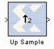

|
|
The Xilinx Up Sample block increases the sample rate at the point where the block is placed in your design. The output sample period is l/n, where l is the input sample period and n is the sampling rate.The input signal is up sampled so that within an input sample frame, an input sample is either presented at the output n times if samples are copied, or presented once with (n-1) zeroes interspersed if zero padding is used.In hardware, the Up Sample block has two possible implementations. If the Copy Samples option is selected on the block parameters dialog box, the Din port is connected directly to Dout and no hardware is expended. Alternatively, if zero padding is selected, a mux is used to switch between the input sample and inserted zeros. The corresponding circuit for the zero padding Up Sample block is shown below.